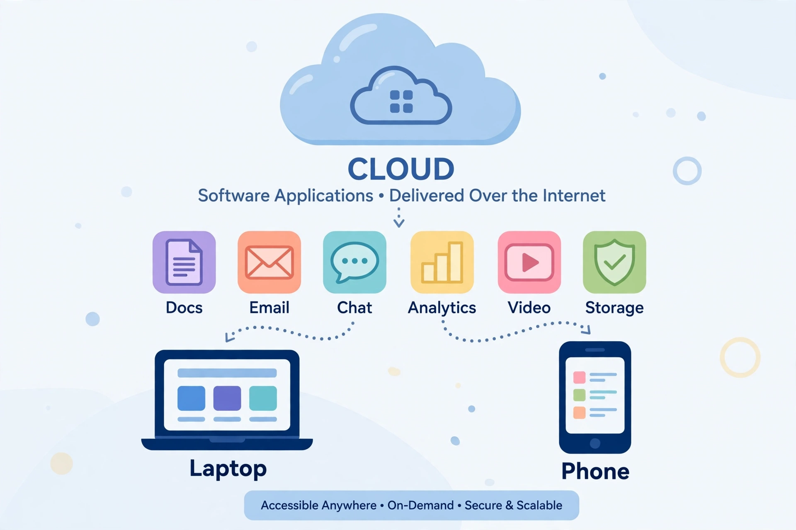

Software as a service (SaaS) is a software licensing and delivery model in which software is licensed on a subscription basis and is centrally hosted. SaaS is a cloud computing service model along with infrastructure as a service (IaaS) and platform as a service (PaaS), and applications are typically accessed by users through a web browser, with the provider managing the underlying infrastructure, updates, security and availability.
The model descends from the time-sharing systems of the 1960s and the application service providers (ASPs) of the 1990s. It took off with the spread of broadband internet in the late 1990s and 2000s; Salesforce, founded in 1999 by Marc Benioff, popularised SaaS for customer relationship management, followed by products such as Google Apps (now Google Workspace), Microsoft 365, Slack, Zoom and countless vertical applications.
SaaS applications are usually multi-tenant, meaning one instance serves many customers with logically separated data, enabling rapid updates and economies of scale. Pricing is typically per-user-per-month, often with freemium tiers. Customers avoid capital expenditure and maintenance but depend on the provider for uptime, data portability and security, raising concerns about vendor lock-in and outages.
By the 2020s SaaS had become the dominant model for business software, with global spending in the hundreds of billions of dollars annually, and most enterprise software vendors transitioning from perpetual licences to subscriptions.